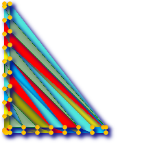

名前
ST_DelaunayTriangles — 与えられたポイントの周りのドロネー三角形を返します。
概要
geometry ST_DelaunayTriangles(geometry g1, float tolerance, int4 flags);
説明
入力ジオメトリの頂点の周りのドロネー三角形を返します。出力はポリゴンのコレクション (flags=0の場合)、MULTILINESTRING (flags=1の場合)、TIN(flags=2の場合)のいずれかになります。いずれの場合も、入力の頂点を一緒にスナップするために許容誤差が使われます。
Availability: 2.1.0 - GEOS 3.4.0以上が必要です。
 This function supports 3d and will not drop the z-index.
This function supports 3d and will not drop the z-index.
This function supports Triangles and Triangulated Irregular Network Surfaces (TIN).
2次元の例
 元のポリゴン -- 元のジオメトリ --
ST_Union(ST_GeomFromText('POLYGON((175 150, 20 40,
50 60, 125 100, 175 150))'),
ST_Buffer(ST_GeomFromText('POINT(110 170)'), 20)
) |
 二つのポリゴンのST_DelaunayTriangles: ポリゴンごとに異なる色をつけたドロネー三角形ポリゴン
-- マルチラインストリングによる三角形を載せたジオメトリ --
SELECT
ST_DelaunayTriangles(
ST_Union(ST_GeomFromText('POLYGON((175 150, 20 40,
50 60, 125 100, 175 150))'),
ST_Buffer(ST_GeomFromText('POINT(110 170)'), 20)
))
As dtriag;
|
 マルチラインストリングにしたドロネー三角形
SELECT
ST_DelaunayTriangles(
ST_Union(ST_GeomFromText('POLYGON((175 150, 20 40,
50 60, 125 100, 175 150))'),
ST_Buffer(ST_GeomFromText('POINT(110 170)'), 20)
),0.001,1)
As dtriag;
|
 45個のポイントから生成した55個のドロネー三角形
-- L字型に42個のポイントを持つテーブルを生成
SELECT (ST_DumpPoints(ST_GeomFromText(
'MULTIPOINT(14 14,34 14,54 14,74 14,94 14,114 14,134 14,
150 14,154 14,154 6,134 6,114 6,94 6,74 6,54 6,34 6,
14 6,10 6,8 6,7 7,6 8,6 10,6 30,6 50,6 70,6 90,6 110,6 130,
6 150,6 170,6 190,6 194,14 194,14 174,14 154,14 134,14 114,
14 94,14 74,14 54,14 34,14 14)'))).geom
INTO TABLE l_shape;
-- 個別の三角形ポリゴンとして出力
SELECT ST_AsText((ST_Dump(geom)).geom) As wkt
FROM ( SELECT ST_DelaunayTriangles(ST_Collect(geom)) As geom
FROM l_shape) As foo;
-- wkt --
POLYGON((6 194,6 190,14 194,6 194))
POLYGON((14 194,6 190,14 174,14 194))
POLYGON((14 194,14 174,154 14,14 194))
POLYGON((154 14,14 174,14 154,154 14))
POLYGON((154 14,14 154,150 14,154 14))
POLYGON((154 14,150 14,154 6,154 14))
:
:
|